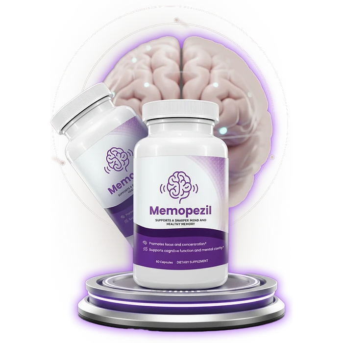
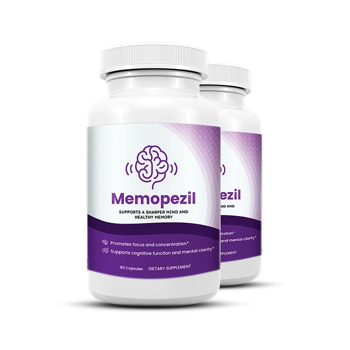

What Is Memopezil And How Does It Work?
Memopezil is a dietary supplement in capsule form designed to support a sharper mind, healthy memory, and steady focus for adults who want to address the forgetfulness, mental fatigue, and scattered concentration that can build up with age, stress, and busy routines through a natural, consistent approach — without complicated protocols or temporary quick fixes.
It utilizes a simple daily serving of two capsules that combines Branched Chain Amino Acids (BCAAs), Bacopa Monnieri, Rhodiola Rosea, L-Theanine, and Panax Ginseng, chosen to support cognitive function, mental clarity, and calm concentration throughout the day. The label says the formula promotes focus and concentration and supports cognitive function and mental clarity.
According to the official website, the ingredients in Memopezil were selected to support memory, focus, mental energy, and resistance to everyday stress, and the formula does not contain caffeine or other stimulants, which makes it a fit for people who want clean, steady support instead of a jittery boost.
Rather than acting as a short-lived artificial fix, Memopezil focuses on a whole-formula approach, working gradually alongside daily routines to help maintain clear thinking, mental energy, and long-term brain wellness.
With consistent daily use, many users report clearer thinking, better recall of everyday details, and more focus during the day, especially when the capsules are combined with good sleep, a balanced diet, physical activity, and mentally stimulating habits. Results vary from person to person.
From a practical standpoint, Memopezil is a daily memory and focus capsule designed to support brain health from within — helping you stay sharp, engaged, and confident in conversations and daily tasks.
Made in the USA with globally sourced ingredients and manufactured in an FDA-registered facility, according to the product label, Memopezil is designed for regular daily use, with a focus on safety, purity, and quality for those seeking a natural, non-prescription approach to everyday cognitive support.
Memopezil Ingredients
Every serving of Memopezil (two capsules) contains five active ingredients listed on the Supplement Facts panel, each with its amount disclosed and chosen to support memory, focus, and mental clarity as part of a consistent daily routine:
Branched Chain Amino Acids 2:1:1 (540 mg): L-Leucine, L-Isoleucine, and L-Valine, essential amino acids included to support mental energy during demanding days.
Bacopa Monnieri Extract (200 mg): An Ayurvedic herb studied for its potential to support memory and learning.
Rhodiola Rosea Extract (100 mg, 3% salidroside): An adaptogen that helps the body cope with mental fatigue and everyday stress.
L-Theanine (100 mg): An amino acid found in green tea associated with calm, relaxed focus.
Panax Ginseng Extract (90 mg): A traditional root used for mental vitality and alertness.
Together, these ingredients are designed to work synergistically to support focus, recall, and mental clarity from within. The other ingredients listed on the label are microcrystalline cellulose, hydroxypropyl methylcellulose (the capsule), and magnesium stearate, and the label states that the product contains no allergens.
Memopezil is designed for daily use, offering a natural, non-prescription approach to supporting brain health, without caffeine, complicated routines, or aggressive synthetic compounds.
Memopezil Side Effects
Memopezil is generally considered well tolerated and is designed for adults of different ages and lifestyles who are looking for a simple, natural, and balanced approach to memory and focus, especially those who prefer an easy daily routine to support mental clarity and concentration without resorting to strong stimulants.
According to the official website, all the ingredients in Memopezil are natural and laboratory-tested, the product is suitable for vegetarians and vegans, and it does not contain caffeine or other stimulants. The label states that it is manufactured in an FDA-registered facility and contains no allergens.
With no widespread reports of serious side effects, Memopezil is generally considered a well-tolerated option. Still, the official website recommends that anyone taking long-term medication — especially for epilepsy, Alzheimer’s, diabetes, high blood pressure, or kidney disease — show the label to their doctor before starting, as some botanicals can interact with medicines. It is not intended to diagnose, treat, cure, or prevent any disease, and individual results may vary.
According to the label, pregnant or nursing mothers, children under the age of 18, and individuals with a known medical condition should consult a physician before using Memopezil. The label also says not to exceed the recommended dose and not to use the product if the safety seal is damaged or missing.
Memopezil Dosage
The recommended Memopezil dosage is two capsules a day with an 8 oz. glass of water, and it is designed to fit easily into a daily routine, making consistency simple and convenient. There are no powders to mix and no drinks to prepare.
The approach printed on the label is to take two (2) Memopezil capsules daily. For best results, the label suggests taking them 20 to 30 minutes before a meal with 8 oz. of water, or as directed by your healthcare professional. The official website recommends taking them preferably in the morning.
For best results, consistency is key. Each bottle contains 60 capsules, a one-month supply at two capsules a day, and because botanical support for memory and focus builds gradually, many customers make it part of an ongoing wellness routine.
There is no need for complex schedules or multi-step routines. One simple daily serving is designed to build lasting support alongside good sleep, a balanced diet, regular exercise, and activities that keep the mind engaged. The label also advises keeping the bottle away from heat, light, and humidity, in a cool, dry place.
As with any dietary supplement, it's important not to exceed the recommended dose and to check the label on your bottle. Memopezil works best when used regularly, combined with proper hydration, balanced nutrition, and healthy daily habits.
Memopezil – Refund Policy
You can order Memopezil with confidence, knowing that every purchase is protected by a 60-day guarantee from the date of purchase. This allows you to try the formula and decide if it delivers the support you expect.
According to the refund policy on the official website, refund requests can be made after a minimum trial period of 30 days and must be started within 60 days of the purchase date. Only sealed bottles are eligible, shipping and customs fees are not refunded, return shipping is paid by the customer, and a 20% restocking fee is deducted.
How the refund process works: If you decide Memopezil is not right for you, email customer support to request a return authorization code, then follow the return instructions provided. Once the returned items are received and verified, your refund will be issued to the original payment method, and you will receive a confirmation email.
Customer Support Contact Information: support@realmemopezil.com, as listed on the official website, or +1 (507) 448-8190, as printed on the product label. According to the official website, the team typically replies to emails within 48 business hours.
Refund Processing Time: After your refund is processed, it may take 5 to 10 business days to appear on your statement, depending on your financial institution.
This refund policy is designed to give customers a clear and transparent experience when trying Memopezil.
Memopezil Customer Reviews
-
Robert S., 66Verified Purchase – 6 Bottles
“… In addition to constantly forgetting things and feeling confused, I had trouble following conversations with my grandchildren. Since I started taking Memopezil, everything has changed. I can follow complex stories, remember important dates, and I'm finally thinking as sharply as I used to. Best of all, I feel confident speaking up in groups again. Memopezil really works!”
-
Patricia MS., 79Verified Purchase – 6 Bottles
“… Simple things like remembering where I put my keys or recalling a neighbor's name became embarrassing challenges. Then I discovered Memopezil. Within just a few weeks of taking it daily, I noticed myself remembering details again and thinking more clearly. My mental fog started lifting effortlessly, and I finally feel in control of my mind again. Memopezil changed my life!”
-
Linda K., 51Verified Purchase – 6 Bottles
“I was always worried about losing my mental sharpness, especially after seeing my father struggle with severe memory issues. When I discovered Memopezil, I decided to give it a shot. After a few months of taking it, my life completely changed. My mind feels clear, I can remember names and faces easily, and I no longer worry about my cognitive future. Even my children noticed the difference in our conversations. Memopezil is amazing!”
Memopezil – Where To Buy
Memopezil is sold through its official website, so if you decide to try it, it's important to be careful about where you purchase it. The official website is the only sales channel the manufacturer lists, and it does not point to marketplaces such as Amazon, eBay, or Walmart.
Listings on third-party platforms may look similar but cannot be verified as authentic, raising concerns about safety, quality, and ingredient freshness. Products purchased outside the official source may not be covered by the 60-day guarantee.
For this reason, most customers recommend purchasing Memopezil only through the official website. Buying directly from the official source ensures you receive the authentic original product, made in the USA, with access to customer support and the full guarantee. According to the official website, every purchase is a one-time order, with no automatic renewals or hidden fees.
To avoid counterfeit batches and ensure maximum quality, always verify that you are ordering from the official Memopezil website before completing your purchase.
To ensure you’re getting the authentic product, most users choose to visit the official website.
Is Memopezil A Scam?
Based on what the official website and the product label disclose, Memopezil does not appear to be a scam. It is a real capsule supplement, sold through an established retailer, and formulated to support memory, focus, and mental clarity as part of a consistent routine.
The ingredients used in Memopezil — Branched Chain Amino Acids, Bacopa Monnieri, Rhodiola Rosea, L-Theanine, and Panax Ginseng — are well known in the wellness field, and the label publishes a full Supplement Facts panel with the amount of each one, with no proprietary blend, for transparency.
In addition to its formula, Memopezil is made in the USA with globally sourced ingredients in an FDA-registered facility, according to the product label, which also identifies the distributor, with an address and a phone number, with a focus on safety, purity, and consistency.
Many users report clearer thinking, better focus, and more confidence in daily conversations, making Memopezil a practical option for those seeking natural support for brain health. Results vary from person to person, and no supplement replaces medical care, diagnosis, or prescribed treatment.
Memopezil is backed by a 60-day guarantee. The refund rules, including the sealed-bottle requirement and the restocking fee, are published on the official website, which underscores the manufacturer's transparency with customers.
If you're looking for a simple daily capsule to support memory, focus, and mental clarity without complicated routines or stimulants, Memopezil is worth considering — especially when purchased directly from the official website.
For those who want to verify product details or check current availability, the official Memopezil website remains the safest option.

Check Availability On Official Website